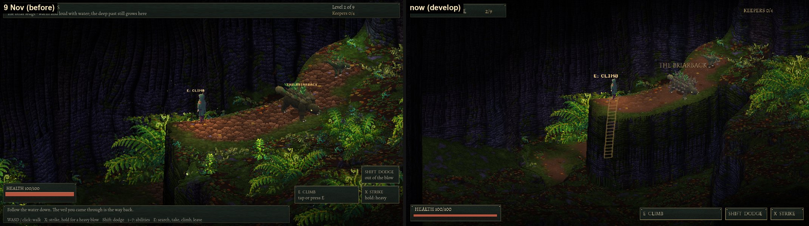
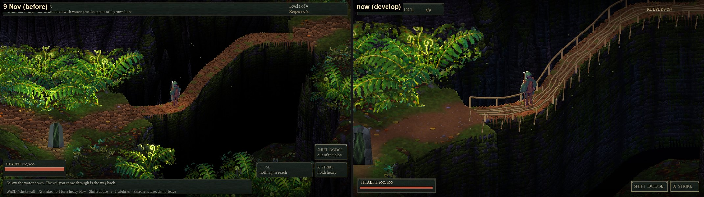
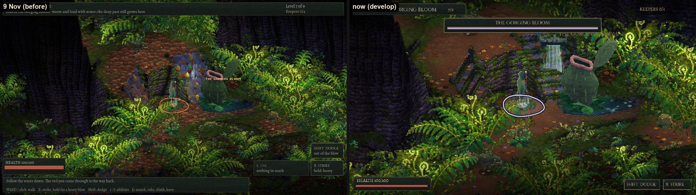

10 November 2026
Reading the Fernfall Deeps
A ledge should make you feel the drop. A warning should give you time to move. The latest work beneath Oakwell starts with making those things clear.
The Fernfall Deeps descend through fern banks, old rock and falling water. You can look into rooms below before reaching them, cross a root bridge and meet the keepers on the way to the deepest chamber. The first full visual review found that too much of that structure was hard to read. A tall cliff looked like a garden border. Ferns filled the view into the drop. The controls took up room the cave needed.
These pictures compare the dungeon before and after the changes merged on 9 November. Both sides are captures from the running game at the same review spots. They show a step forward, with the remaining problems still visible.
A ledge with somewhere below it

The Briarback's ledge is meant to be narrow and dangerous. In the earlier picture, the plants make it look like a raised path. The later view clears the face, gives the lip an edge and lets the rock fall away into shadow. The ladder has rungs you can follow down towards the floor below.
That distinction matters before a fight starts. You should be able to tell where you can stand and how the next room connects to this one without reading the room's name.

The bridge now has root rails and hanging roots, giving the crossing a shape beyond its strip of floor. The interface has drawn back too. Once its arrival message settles, the cave has much more of the screen to itself. The darkness below still needs work: a crossing over a real lower room should let that room show through.
A warning you can see

The Gorging Bloom's lid now meets its rim. Its attack warning has a pale outline that stands out against the warm floor. Other moves have clearer lanes and arrows, while the keepers have more distinct bodies. There are still mistakes in this picture, including the repeated creature name and the artificial-looking source of the fall.
Some of the most useful repairs are quieter. Continue inside the cave opens against darkness while the room loads. The traveller plays the walking animation. Long messages fit above the controls, and the way home appears where the final creature fell.
What the pictures caught
The review also caught work that had not survived contact with the game. The new swaying-fern layer selected no plants, so the ferns stayed still. Water had become wider, but its sources looked built rather than worn out of rock. The largest creature could fill the screen while leaving little room to fight.
Those findings are driving the next passes. Foliage, water, the entrance, labels and the awkward basin ladder are being checked together in a follow-up. Bigger fighting floors and combat across height are separate pieces of work. They remain unfinished.
Automated journeys have exercised entering, descending, fighting, returning and reopening the saved game. These images come from those controlled reviews. A human playtest still has to tell us whether the path is clear and the fights feel fair.